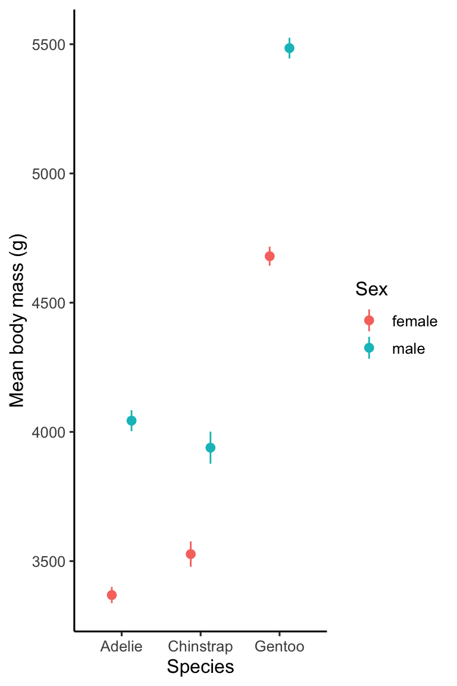

Chapter 17 Doing more with ggplot2
We have now seen a range of different ways to visualise and explore data using ggplot2. This last chapter will cover a few bits of miscellanea that don’t particularly fit anywhere else. That doesn’t mean the ideas aren’t important!
17.1 Comparing descriptive statistics
So far, we have focussed on displaying the raw data (e.g. scatter plots) or a distributional summary (e.g. box plots). What other types of quantities might we need to visualise? Descriptive statistics such as the sample mean are one possibility. These often feature in data analysis when ‘comparing groups.’
We need to know how to construct plots that display such summaries. Let’s start with a simple question: how does the (arithmetic) mean body mass varies by sex and across penguin species? One option is to produce a bar plot for which the lengths of bars represent the mean body mass in each category.
There are two different routes to produce this with ggplot2. One way to build such a plot is to break the problem into two steps. In the first step, we calculate whatever it is we want to display, i.e. the species- and sex-specific mean body mass. dplyr is usually the best tool to use for this first step:
penguins_summary <- penguins %>%
# group data by species and penguins
group_by(species, sex) %>%
# calculate mean body mass
summarise(mean_mass = mean(body_mass_g)) %>%
# remove rows generated by sex = NA cases
na.omit()## `summarise()` has grouped output by 'species'. You can override using the `.groups` argument.We used group_by and summarise to calculate the set of means, which we decided to call mean_mass. Notice that we used na.omit to exclude the NA categories that arise when sex is unknown. The resulting penguins_summary object is a small 6 row by 3 column tibble:
# show the summary data
penguins_summary## # A tibble: 6 x 3
## # Groups: species [3]
## species sex mean_mass
## <chr> <chr> <dbl>
## 1 Adelie female 3369.
## 2 Adelie male 4043.
## 3 Chinstrap female 3527.
## 4 Chinstrap male 3939.
## 5 Gentoo female 4680.
## 6 Gentoo male 5485.The second step uses penguins_summary with ggplot2 to create the required bar plot:
# display bar plot of body mass means
ggplot(penguins_summary,
# aesthetic mappings: mass (y) vs species (x) by sex (fill)
aes(x = species, fill = sex, y = mean_mass)) +
# use geom_col to add bar plot layer 'as is' with adjacent bars
geom_col(position = "dodge") +
# specify labels for all mappings
labs(x = "Species", y = "Mean body mass (g)", fill = "Sex")
Two points about this are worth noting:
- We used
geom_colinstead ofgeom_bar.geom_barcounts the observations in each category by default. Usinggeom_coltells ggplot2 to plot the information inmean_mass‘as is.’ - We paid close attention to the names of things. The plotting data lives in
penguins_summarywhich means the y aesthetic must be associated withmean_massrather thanbody_mass_g.
It is possible to produce this plot with less code by using ggplot2’s built-in ‘stat’ facility (see box). We recommend the long-winded way when starting out with R because it makes it a bit easier to fix mistakes—we can check whether the right information is in a summary data set before plotting it.
Using ggplot2 ‘stats’
Another way to arrive at the above bar plot is by using the built-in ggplot2 stat facility:
# display bar plot of body mass means
ggplot(na.omit(penguins), # <- remove missing values
# aesthetic mappings: mass (y) vs species (x) by sex (fill)
aes(x = species, fill = sex, y = body_mass_g)) +
# use geom_bar to add bar plot layer using a stats summary
geom_bar(stat = "summary", fun.y = mean, position = "dodge") +
# specify labels for all mappings
labs(x = "Species", y = "Mean body mass (g)", fill = "Sex")## No summary function supplied, defaulting to `mean_se()`
This involves a couple of new tricks. When we add a layer using geom_bar we set two additional arguments:
stat = "summary"tells ggplot2 not to plot the raw values of the y aesthetic mapping, but instead, to calculate and then plot a summary of the ‘y’ variable.fun.y = meantells ggplot2 how to summarise the ‘y’ variable. The function on the right-hand side can be any function that takes a vector of values and returns a single number. We want themeanfunction.
Notice that this works on the raw data (penguins)—there is no need to manually calculate the means because that happens inside ggplot2.
17.1.1 Error bars
A descriptive statistic like the mean isn’t much use on its own. To properly interpret means we also need to know something about their uncertainty. There are many ways to quantify the uncertainty of an estimate. Whichever one we are using, displaying the uncertainty typically involves adding error bars to a plot.
We’ll demonstrate how to do this by extending the previous example to show the mean and standard error of body mass for each species.
Er…. standard error?
The standard error is a measure of how precise an estimate like the sample mean is. A small standard error indicates that we can have more confidence the estimate reflects the ‘true’ value. The standard error of the mean can be calculated from a well-known formula: \[ \text{Standard Error} = \frac{\text{Standard Deviation}}{\sqrt{(\text{Sample Size})}} = \frac{\sigma}{\sqrt{n}} \] It is hard to give an explanation of that formula without knowing a bit of statistical theory—it is just one of those things we have to learn. In terms of code that works with dplyr, that calculation looks like this:
standard_error = sd(x) / sqrt(n())This assumes the numeric variable we are working with is called x, and we want the result to be called standard_error. Notice this uses a special dplyr function called n to find the sample size.
Once again, constructing the plot is a two-step process. Start by calculating the means and standard error of body mass for each species and sex combination:
penguins_summary <- penguins %>%
# group data by species and penguins
group_by(species, sex) %>%
# calculate summaries
summarise(
# mean mass
mean_mass = mean(body_mass_g, na.rm = TRUE),
# standard error
ster_mass = sd(body_mass_g, na.rm = TRUE) / sqrt(n())
) %>%
# remove rows generated by sex = NA cases
na.omit()## `summarise()` has grouped output by 'species'. You can override using the `.groups` argument.We use dplyr to calculate the means and standard errors of each species’ body mass, which we called mean_mass and ster_mass, respectively. Again, we used na.omit to exclude the NA categories cases. The new penguins_summary object is a 6 row by 4 column tibble:
# show the new summary data
penguins_summary## # A tibble: 6 x 4
## # Groups: species [3]
## species sex mean_mass ster_mass
## <chr> <chr> <dbl> <dbl>
## 1 Adelie female 3369. 31.5
## 2 Adelie male 4043. 40.6
## 3 Chinstrap female 3527. 48.9
## 4 Chinstrap male 3939. 62.1
## 5 Gentoo female 4680. 37.0
## 6 Gentoo male 5485. 40.1Next we use penguins_summary to make the plot. We can use geom_col to show the means as a bar plot, but what about the error bars? Use the unsurprisingly named geom_errorbar to add those! Here is the code:
# display bar plot of body mass means + SE's
ggplot(penguins_summary,
# aesthetic mappings: mass (y) vs species (x) by sex (fill)
aes(x = species, fill = sex, y = mean_mass)) +
# use geom_col to add an adjacent bar plot layer
geom_col(position = "dodge") +
# use geom_errorbar to add an error bar layer
geom_errorbar(aes(ymin = mean_mass - ster_mass, ymax = mean_mass + ster_mass),
# customise size of hat + ensure error bars are centred
width = 0.2, position = position_dodge(0.9)) +
# use a more professional theme
theme_classic(base_size = 12) +
# specify labels for all mappings
labs(x = "Species", y = "Mean body mass (g)", fill = "Sex")The only new things appear in the geom_errorbar part:
- The
yminandymaxarguments of thegeom_errorbarfunction give the lower and upper limits of error bars. Here, we have plotted the mean +/- 1 standard error, i.e. each error bar is two standard errors long. - Use the
widthargument to set the width of the ‘hat’ on each error bar. A value of zero gets rid of it altogether. - The position has to be set in two places:
geom_colandgeom_errorbar. For a bar plot, we use the not-at-all-intuitiveposition = position_dodge(0.9)to locate the error bars at the centre of each bar.
Warning!
Data visualisations can include many different kinds of ‘error bar’— standard deviation, standard error, 95% confidence intervals, etc. When we include any error bars on a plot, we must remember to state which kind was used in the figure legend. Otherwise, readers will have no way of knowing how to interpret the plot.
17.1.2 Alternatives to bar plots
Do we have to use a bar plot to display means? Certainly not. In some ways bar plots are a bit old fashioned. People often prefer to show a set of means as points with error bars. This kind of visualisation is very easy to make now that we already have working bar plot code:
# display points plot of body mass means + SE's
ggplot(penguins_summary,
# aesthetic mappings: mass (y) vs species (x) by sex (colour)
aes(x = species, colour = sex, y = mean_mass)) +
# use geom_col to add an adjacent bar plot layer
geom_point(position = position_dodge(0.5)) +
# use geom_errorbar to add an error bar layer
geom_errorbar(aes(ymin = mean_mass - ster_mass, ymax = mean_mass + ster_mass),
# customise size of hat + ensure error bars are centred
width = 0.2, position = position_dodge(0.5)) +
# use a more professional theme
theme_classic(base_size = 12) +
# specify labels for all mappings
labs(x = "Species", y = "Mean body mass (g)", colour = "Sex")
We made three small changes to the bar plot code to produce this. We…
- mapped
sexto thecolouraesthetic instead offill, - switched from using
geom_coltogeom_point, and - altered the position adjustments to ‘dodge’ by a smaller amount.
That’s it!
17.2 Adding text annotations
We often need to include text annotations on a plot. For example, we might want to show sample sizes or highlight ‘statistically significant’ differences. Adding text is no different from adding other kinds of objects to a plot—we use an appropriate geom (e.g. geom_text) to include textual information. Let’s see how this works by adding sample size labels the bar chart we’ve been building.
We start by placing the labels we want to use in a data frame (or tibble) alongside any other variables used in aesthetic mappings. This can be distinct from the data set used to construct the plot but its often simplest to put everything together in one place. Let’s do that by rebuilding the penguins_summary data set to include the mean body mass, standard error and sample size for each group.
penguins_summary <- penguins %>%
# group data by species and penguins
group_by(species, sex) %>%
# calculate summaries
summarise(
# mean mass
mean_mass = mean(body_mass_g, na.rm = TRUE),
# sample size
samp_size = n(),
# standard error
ster_mass = sd(body_mass_g, na.rm = TRUE) / sqrt(n())
) %>%
# remove rows generated by sex = NA cases
na.omit()## `summarise()` has grouped output by 'species'. You can override using the `.groups` argument.Then we add the text showing the sample size to our plot using the function geom_text:
# display bar plot of body mass means + SE's + sample sizes
ggplot(penguins_summary,
# aesthetic mappings: mass (y) vs species (x) by sex (fill)
aes(x = species, fill = sex, y = mean_mass)) +
# use geom_col to add an adjacent bar plot layer
geom_col(position = "dodge") +
# use geom_errorbar to add an error bar layer
geom_errorbar(aes(ymin = mean_mass - ster_mass, ymax = mean_mass + ster_mass),
# customise size of hat + ensure error bars are centred
width = 0.2, position = position_dodge(0.9)) +
# place sample size annotations above error bars
geom_text(aes(label = samp_size, y = mean_mass + ster_mass + 200),
size = 3, colour = "darkgrey", position = position_dodge(0.9)) +
# use a more professional theme
theme_classic(base_size = 12) +
# specify labels for all mappings
labs(x = "Species", y = "Mean body mass (g)", fill = "Sex")The y = mean_mass + ster_mass + 200 aesthetic mapping in geom_text positions each number just above the error bar. This works because we placed the textual information in the plotting data set, meaning we can use the x/y variables to set the position of the annotations. We also have to use the correct position adjustment to ensure the annotations are located at each bar’s centre. Everything else inside geom_text is adjusting the appearance of the actual text.
17.3 Saving plots
Plots can be saved using the Export button in the RStudio Plots tab. However, saving plots this way often leads to a pixelated, low resolution image. The ggsave function in ggplot2 produces much better output and supports a wide range of image file types. There’s not much to it. Using ggsave looks like this:
ggsave("penguins-plot.pdf", height = 5, width = 5)By default, ggsave will save the last plot we made to file. If we had made the bar chart and then ran that ggsave line, R would save a copy of the plot to as a PDF file called penguins-plot.pdf.
Here is a quick summary of how the function works:
The first argument is the path and name of the file we want to create. This example would save the plot to a file called penguins-plot.pdf. Because we only provide a file name,
ggsavewould save it to the current working directory.ggsavesupports many different formats (e.g. “pdf,” “jpeg,” “png,” “svg”). This can be set via thedeviceargument (e.g. device = "jpeg"). Alternatively, if we don’t set the format, ggplot2 will guess it from the file extension.The
widthandheightarguments specify the plot dimensions. These usually require a bit of experimentation to get right. If we do not specify them,ggsavewill use the current size of the plotting window.
17.4 Multi-panel plots
We have seen how to use facet_wrap and facet_grid to produce multi-panel plots. These functions are useful when a plot needs to show the same visualisation for different subsets of data. How do we produce a figure that shows a different visualisation in each panel?
There are many ways to do this using an external add-on package. We’ll examine the framework provided by the cowplot package. Cowplot provides various features that help create high-quality figures, including custom themes and facilities to arrange plots into multi-panel figures.
Constructing a multi-panel plot with cowplot happens in two stages. First, make the individual component plots using ggplot2 as usual, but instead of ‘printing’ them, assign each graphical object a name. Then use the plot_grid function from cowplot to construct the multi-panel plot from the stored objects.
For example, assume we want to display at the bill morphology scatter plot and the mean body mass bar chart side-by-side. First we make the two plots assign them names (with minimal commenting to save space):
# first plot
plt_a <-
ggplot(penguins,
aes(x = bill_length_mm, y = bill_depth_mm, colour = species)) +
geom_point() +
scale_color_manual(values = c("cornflowerblue", "seagreen", "orangered3")) +
labs(x = "Bill length (mm)", y = "Bill depth (mm)", colour = "Species") +
theme_classic(base_size = 12)
# second plot
plt_b <-
ggplot(penguins_summary,
aes(x = species, fill = sex, y = mean_mass)) +
geom_col(position = "dodge") +
geom_errorbar(aes(ymin = mean_mass - ster_mass, ymax = mean_mass + ster_mass),
width = 0.2, position = position_dodge(0.9)) +
labs(x = "Species", y = "Mean body mass (g)", fill = "Sex") +
theme_classic(base_size = 12)Then we use cowplot’s plot_grid to produce the two-panel plot:
plot_grid(
# two-panel plot
plt_a, plt_b,
# set location and size of panels
nrow = 1, rel_widths = c(60, 40),
# set the panel labels
labels = c("a)", "b)"), label_size = 14
)Once we’ve made a multi-panel plot, we can use the ggsave function to save it as before. The plot_grid function allows the figure to be customised in various ways. For example:
nrowandncolcontrol the number of plots in each row/column,labelssets the labels used for each panel,label_sizecontrols the size of the label font, andrel_widthsandrel_heightscontrol how much space each plot gets.
The package website has some good articles that explain how this all works (along with the many other cowplot facilities).